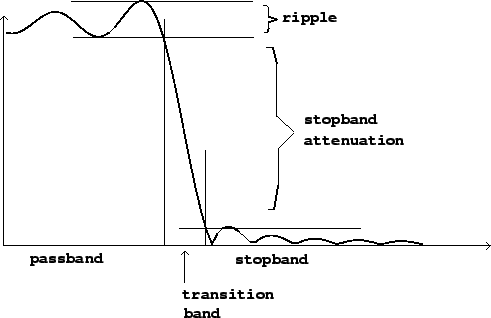

By far the most frequent purpose for using a filter is extracting either the low-frequency or the high-frequency portion of an audio signal, attenuating the rest. This is accomplished using a low-pass or high-pass filter.
|  |
Ideally, a low-pass or high-pass filter would have a frequency response of one up to (or down to) a specified cutoff frequency and zero past it; but such filters cannot be realized in practice. Instead, we try to find realizable approximations to this ideal response. The more design effort and computation time we put into it, the closer we can get.
Figure 8.2 shows the frequency response of a low-pass filter. Frequency is divided into three bands, labeled on the horizontal axis. The passband is the region (frequency band) where the filter should pass its input through to its output with unit gain. For a low-pass filter (as shown), the passband reaches from a frequency of zero up to a certain frequency limit. For a high-pass filter, the passband would appear on the right-hand side of the graph and would extend from the frequency limit up to the highest frequency possible. Any realizable filter's passband will be only approximately flat; the deviation from flatness is called the ripple, and is often specified by giving the ratio between the highest and lowest gain in the passband, expressed in decibels. The ideal low-pass or high-pass filter would have a ripple of 0 dB.
The stopband of a low-pass or high-pass filter is the frequency band over which the filter is intended not to transmit its input. The stopband attenuation is the difference, in decibels, between the lowest gain in the passband and the highest gain in the stopband. Ideally this would be infinite; the higher the better.
Finally, a realizable filter, whose frequency response is always a continuous function of frequency, must have a frequency band over which the gain drops from the passband gain to the stopband gain; this is called the transition band. The thinner this band can be made, the more nearly ideal the filter.